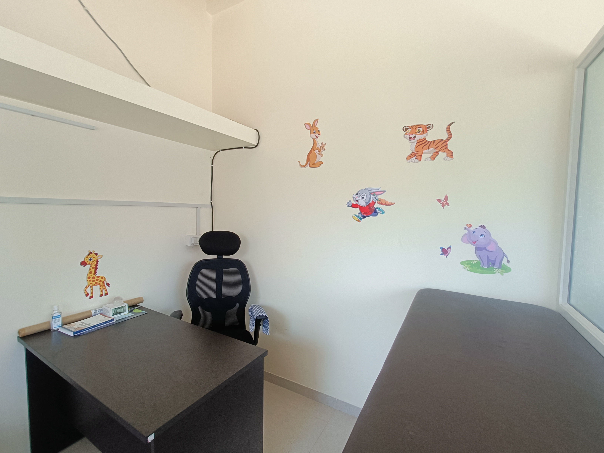

Dr. Nishant Tawari (Taori)
Best Child specialist & Allergy Specialist, Nagpur
OPD Timings
Mon & Thu: 12:30–2:00 PM & 7:30–9:00 PM
Tue, Wed, Fri, Sat: 10:00 AM–1:00 PM & 7:30–9:00 PM
Sunday: 10:30 AM–1:00 PM
Address
Shree Krishna Nagar, Plot no. 16, Wathoda Layout, Kharbi, Nagpur, Maharashtra 440008
About Dr. Nishant Tawari
Dr. Nishant Tawari is a qualified Child Specialist and Allergy Specialist with MBBS, DCH, DNB (Mumbai). He provides compassionate, evidence-based care for infants, children, and adolescents.
His clinic focuses on the diagnosis and management of childhood allergies, asthma, recurrent infections, skin allergies, food allergies, and routine pediatric care. The clinic offers a child-friendly environment with personalized treatment plans for every patient.
Dr. Tawari believes in clear communication with parents, preventive care, timely vaccination, and long-term follow-up for chronic allergic conditions.
Clinic Photos



Services Available
• General Paediatric OPD – growth monitoring, nutrition advice, routine illnesses
• Vaccination & Immunization counselling
• Childhood Asthma & Wheeze management
• Allergic Rhinitis (nasal allergy)
• Skin Allergy & Urticaria
• Food & Drug Allergy evaluation
• Recurrent cough, cold & breathing problems
• Nebulization therapy
• Basic lung function testing (where indicated)
Facilities at the Clinic
• Child-friendly waiting area
• Nebulization facility
• Clean, hygienic consultation room
• Easy appointment via Call & WhatsApp
• Convenient location with directions link
Best Child Specialist & Allergy Doctor in Nagpur
Dr. Nishant Tawari (Taori) is a trusted Child Specialist and Allergy Specialist in Nagpur, providing comprehensive pediatric care for infants, children, and adolescents. The clinic is located in Shreekrishna nagar, Nagpur near Nandanvan & Kharbi and is easily accessible from Wathoda Layout, Shree Krishna Nagar, Manewada, Hudkeshwar, and nearby areas.
Parents looking for a reliable pediatrician in Nagpur can consult for childhood asthma, recurrent cough and cold, allergic rhinitis (nasal allergy), skin allergies, food allergies, urticaria, and frequent infections. The clinic also offers routine child health check-ups, growth monitoring, vaccination guidance, and preventive pediatric care.
If you are searching for a child doctor near me in Nagpur, pediatric allergy specialist in Nagpur, or best pediatrician in Shree Krishna Nagar, Wathoda, Nagpur, Dr. Nishant Tawari’s clinic provides compassionate care with convenient OPD timings and easy appointment via Call and WhatsApp.